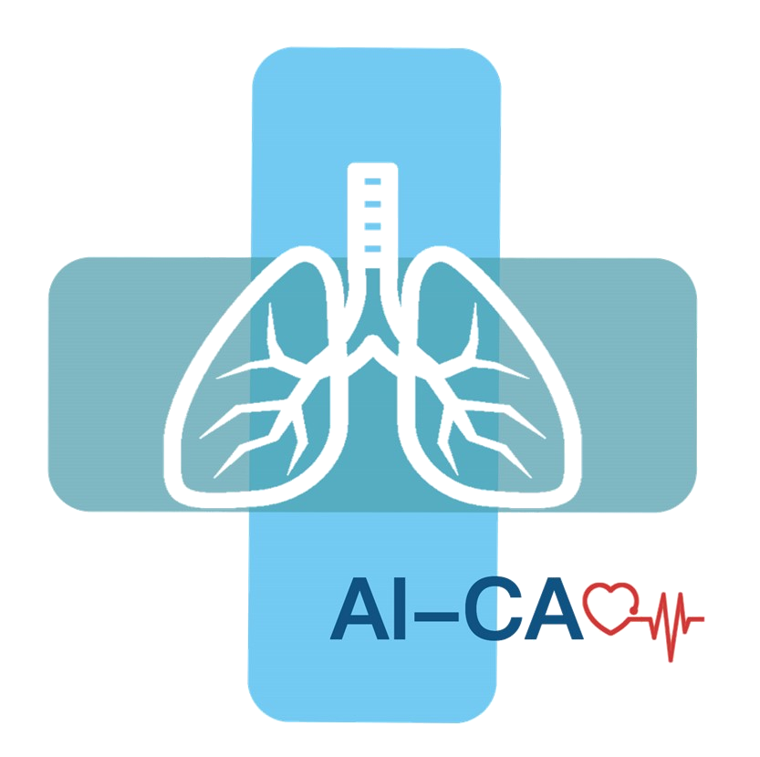

iSight Glass
Founder · Feb 2017
Customizable Virtual Reality Glasses for Geeks
Watch demo →
Founder · Feb 2017
Customizable Virtual Reality Glasses for Geeks
Watch demo →
Founder · Jun 2015
Intelligent Unmanned Farmland Management System
Watch demo →
Founder · Apr 2017
Lung Cancer Early Screening Medical Aid System
Watch demo →